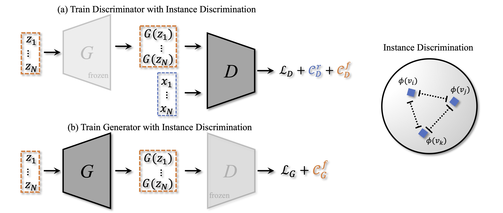
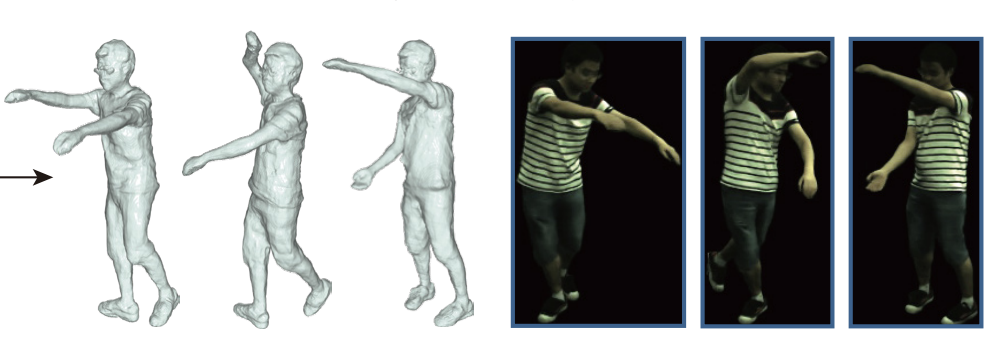
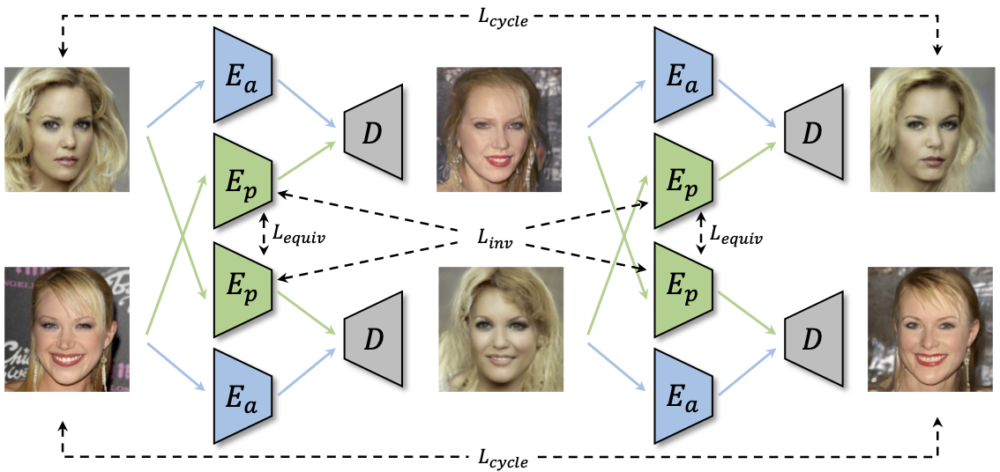
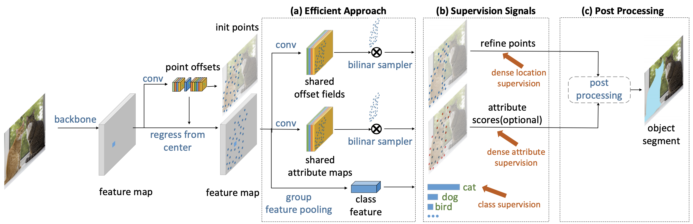
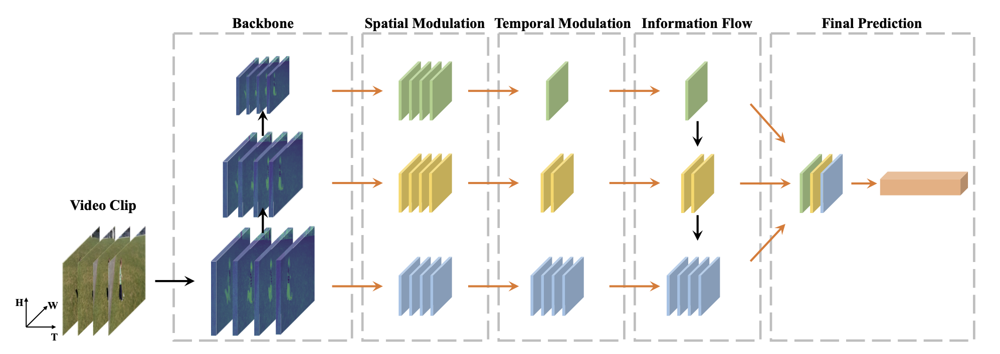
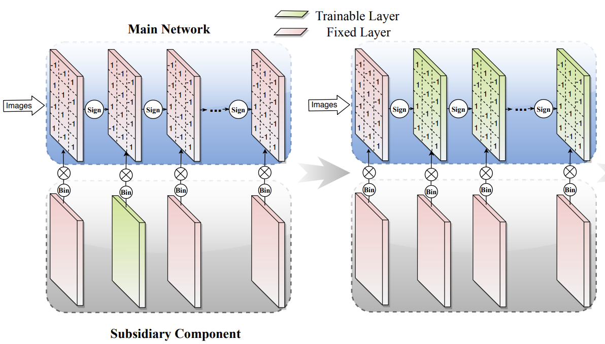

|
Department of Information Engineering The Chinese University of Hong Kong E-mail / Github |

|
Biography
Yinghao Xu is a third-year Ph.D student at Multimedia Lab (MMLab), Department of Information Engineering in The Chinese University of Hong Kong. His supervisor is Prof. Bolei Zhou. He graduated from Zhejiang University in 2019 working closely with Dr. Lechao Cheng. His research include video analysis, generative modeling and image synthesis. He works very closely with Prof. Bo Dai and Dr. Yujun Shen.
Experiences
Research Intern, Visual Computing Group, Microsoft Research Aisa.
Nov. 2018 - May. 2019
Supervised by: Jifeng Dai, Han Hu, Steve Lin.-
Research Intern, Visual Computing Center, University of California San Diego.
Jul. 2018 - Sep. 2018.
Supervised by: Hao Su.
News
- [09/2021] One paper to appear in NeurIPS 2021. It is my first NeurIPS paper. 🍺!
- [03/2021] One paper about object-level nerf is accepted by ICCV 2021.
- [03/2021] Two papers (one oral and one best paper candidate) to appear in CVPR 2021.
- [09/2020] We release GenForce, an efficient PyTorch library for deep generative modeling.
Selected Publications [Full list]
|
 |
Data-Efficient Instance Generation from Instance Discrimination,
|

|
Generative Hierarchical Features from Synthesizing Images,
Oral Presentation
|
|
 |
Neural Body: Implicit Neural Representations with Structured Latent Codes for Novel View Synthesis of Dynamic Humans,
Best paper candidate
|
|
 |
Unsupervised Landmark Learning from Unpaired Data,
|
|
 |
|
|
 |
Temporal Pyramid Network for Action Recognition,
|
|
 |
A Main/Subsidiary Network Framework for Simplifying Binary Networks,
|
Professional activities
- Conference Reviewer for CVPR, ECCV, AAAI, ICCV, NIPS, ICLR.
Selected Honors & Awards
- National Scholarship, 2018
- Tang Lixin Scholarship, 2018
- First Class Scholarship for Academic Excellence, 2018,2017
- Government Scholarship of Zhejiang Province, 2017,2016
- Meritorious Winner, Interdisciplinary Contest In Modeling(ICM), 2018
- First Prize of Mathematics competition of Chinese College Students, 2017